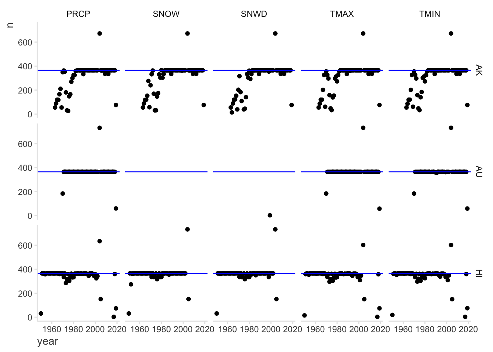
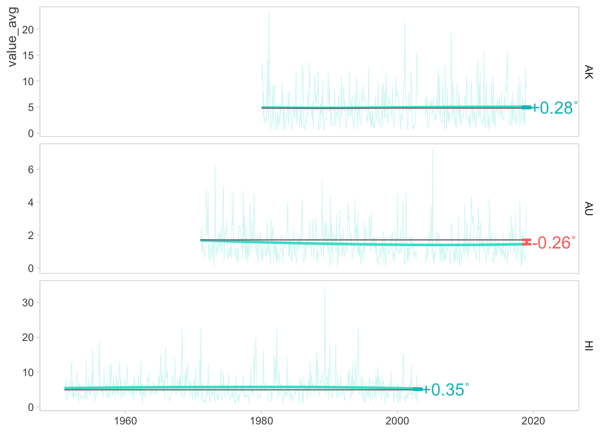

Data is from the Daily Global Historical Climatology Network (GHCN). It only includes three selected stations (one in AK, AU and HI) and ranges from years 1950 to 2019. The units for elements of interest (TMIN & TMAX: tenths of degrees celsius; PRCP: tenths of mm; SNOW & SNWD: mm).
Code
# read in data(data_climate_raw<-read_csv("files/data/climate-data.csv", col_names =TRUE, col_types =c("ccDcnccc")))
# A tibble: 268,454 × 8
StationID Location Date Element Value MFlag QFlag SFlag
<chr> <chr> <date> <chr> <dbl> <chr> <chr> <chr>
1 USC00511125 HI 1950-12-01 TMAX 239 <NA> <NA> 0
2 USC00511125 HI 1950-12-01 TMIN 200 <NA> <NA> 0
3 USC00511125 HI 1950-12-01 PRCP 79 <NA> <NA> 0
4 USC00511125 HI 1950-12-01 SNOW 0 <NA> <NA> 0
5 USC00511125 HI 1950-12-01 SNWD 0 <NA> <NA> 0
6 USC00511125 HI 1950-12-02 TMAX 233 <NA> <NA> 0
7 USC00511125 HI 1950-12-02 TMIN 189 <NA> <NA> 0
8 USC00511125 HI 1950-12-02 PRCP 269 <NA> <NA> 0
9 USC00511125 HI 1950-12-02 SNOW 0 <NA> <NA> 0
10 USC00511125 HI 1950-12-02 SNWD 0 <NA> <NA> 0
# ℹ 268,444 more rows
1.3 Base data manipulation
1.3.1 Basic data cleaning
Now lets do some basic cleaning of the data, including removing unnecessary columns and filtering to only the initial elements of interest.
Code
# clean up data# -> remove unnecessary columns# -> filter to only desired elements(data_clean<-data_climate_raw%>%select(-ends_with("Flag"),-StationID)%>%filter(Element%in%c("TMIN", "TMAX", "PRCP", "SNOW", "SNWD")))
# A tibble: 236,232 × 4
Location Date Element Value
<chr> <date> <chr> <dbl>
1 HI 1950-12-01 TMAX 239
2 HI 1950-12-01 TMIN 200
3 HI 1950-12-01 PRCP 79
4 HI 1950-12-01 SNOW 0
5 HI 1950-12-01 SNWD 0
6 HI 1950-12-02 TMAX 233
7 HI 1950-12-02 TMIN 189
8 HI 1950-12-02 PRCP 269
9 HI 1950-12-02 SNOW 0
10 HI 1950-12-02 SNWD 0
# ℹ 236,222 more rows
1.3.2 Missing data
Next step is to check to see if there is any missing data. To do this, we can count the number of observations for each year in each respective group. We expect there to be one observation per day, so ideally approximately 365 observations per year at each location for each measurement.
Code
# check dataset for years with missing data# -> count the number of days within each year that have a measurement (for all elements from each location)(data_years<-data_clean%>%count(Location, year =year(Date),Element))
# A tibble: 711 × 4
Location year Element n
<chr> <dbl> <chr> <int>
1 AK 1963 PRCP 55
2 AK 1963 SNOW 55
3 AK 1963 SNWD 55
4 AK 1963 TMAX 55
5 AK 1963 TMIN 55
6 AK 1964 PRCP 89
7 AK 1964 SNOW 89
8 AK 1964 SNWD 14
9 AK 1964 TMAX 87
10 AK 1964 TMIN 87
# ℹ 701 more rows
In order to find things to look into more, lets create a visual for a quick inspection of the count data.
Code
# create plot to visualize the wide data, which represents the total number of days with observations for each year# do this for each location and element combination# add a horizontal line at 365 days, which contextually represents data collected everyday of said yearggplot()+geom_point(aes(x =year, y =n), data =data_years)+geom_hline(yintercept =365, color ="blue")+facet_grid(Location~Element)

Here are some observations:
No snow data for AU.
A few years with more 365 obs.
Only consistent full years of data for AK after around 1980.
Not consistent full year of data for HI beyond 2002.
Thoughts on these:
Should can not work with SNOW and SNWD moving forward. This is because the final goal is to be able to visualize elements that have data for all three locations.
Not sure what this means, so we might want to consider removing these data points? Unclear at this time.
Should only use data for years 1980 and beyond for AK moving forward.
Should only use data up to and including year 2002 for HI moving forward.
Now that we have visually inspected the count data, we can make some initial decisions about which data to work or not work with. Getting these out of the way before diving in more will make it easier.
Code
# start refining the data# -> keep only the elements that are going to be visualized(data_climate<-data_clean%>%filter(Element%in%c("TMIN","TMAX","PRCP")))
# A tibble: 163,669 × 4
Location Date Element Value
<chr> <date> <chr> <dbl>
1 HI 1950-12-01 TMAX 239
2 HI 1950-12-01 TMIN 200
3 HI 1950-12-01 PRCP 79
4 HI 1950-12-02 TMAX 233
5 HI 1950-12-02 TMIN 189
6 HI 1950-12-02 PRCP 269
7 HI 1950-12-03 TMAX 228
8 HI 1950-12-03 TMIN 194
9 HI 1950-12-03 PRCP 457
10 HI 1950-12-04 TMAX 267
# ℹ 163,659 more rows
Now lets look into the count data with only the desired elements to see exactly what’s going on.
Code
# look further into count data# convert to wide data to be able to compactly look at how much data there is (or is not) for each element# can also manually sort by year to look at locations within year when inspecting(data_years_wide<-data_climate%>%count(Location, year =year(Date),Element)%>%pivot_wider(names_from ="Element", values_from ="n"))
# A tibble: 163 × 5
Location year PRCP TMAX TMIN
<chr> <dbl> <int> <int> <int>
1 AK 1963 55 55 55
2 AK 1964 89 87 87
3 AK 1965 120 120 120
4 AK 1966 119 120 120
5 AK 1967 165 202 202
6 AK 1968 211 326 326
7 AK 1969 55 61 61
8 AK 1970 349 356 356
9 AK 1971 363 327 328
10 AK 1972 354 297 297
# ℹ 153 more rows
After closely looking through this representation of the count data, we can confirm the several of the observations made from the first visual. Low number of observations lead us to focus on data within locations that do not include the following years of data:
Sets of years where there is consistently not good data.
One-off years with only a few observations.
Also note that there is no data in the original dataset from 2003 for some reason. This will obviously show up in the final visuals, but nothing that can be done about it (although measures will be taken to ensure accurate portrayals as described later).
Code
# continue refining climate data to move forward with# -> remove years with not good data(data_climate%<>%filter(!(Location=="AK"&(year(Date)<1980|year(Date)==2019)),!(Location=="AU"&(year(Date)%in%c(1970, 2019))),!(Location=="HI"&(year(Date)>2002|year(Date)==1950))))
# A tibble: 149,826 × 4
Location Date Element Value
<chr> <date> <chr> <dbl>
1 HI 1951-01-01 PRCP 0
2 HI 1951-01-02 TMIN 228
3 HI 1951-01-02 PRCP 0
4 HI 1951-01-03 TMIN 206
5 HI 1951-01-03 PRCP 64
6 HI 1951-01-04 TMIN 200
7 HI 1951-01-04 PRCP 15
8 HI 1951-01-05 TMIN 194
9 HI 1951-01-05 PRCP 8
10 HI 1951-01-06 TMIN 194
# ℹ 149,816 more rows
1.3.3 Extra observations
Now lets look into data from 2004. As of now, we are not sure why there are multiple observations for each date across all elements.
Code
# confirm this by counting the number of observations per day for each element / location combo# -> filter to only 2004 data# -> split into dataframe subsets for each element# -> do the counting on each subset# -> combine results into an organized dataframe(data_2004_check<-data_climate%>%filter(year(Date)==2004)%>%split(.$Element)%>%mclapply(FUN =function(element_data){# count the number of rows per day# add back in the element info for when combining the results laterelement_data%>%count(Location, Date)%>%mutate(Element =unique(element_data$Element))}, mc.cores =4)%>%Reduce(f =bind_rows, x =.))
# A tibble: 2,106 × 4
Location Date n Element
<chr> <date> <int> <chr>
1 AK 2004-01-01 2 PRCP
2 AK 2004-01-02 2 PRCP
3 AK 2004-01-03 2 PRCP
4 AK 2004-01-04 2 PRCP
5 AK 2004-01-05 2 PRCP
6 AK 2004-01-06 2 PRCP
7 AK 2004-01-07 2 PRCP
8 AK 2004-01-08 2 PRCP
9 AK 2004-01-09 2 PRCP
10 AK 2004-01-10 2 PRCP
# ℹ 2,096 more rows
We see \(n = 2\), so multiple observations for each day is confirmed. To consolidate these, we are going to average all observations from a single day. This is to have just a single value per day, which will ensure that each day has the same weight when taking monthly averages later. If one day has more than one record, then it would be like there is an extra day, which is an inaccurate interpretation.
Code
# adjust data from 2004# -> filter climate data to only 2004# -> group by identifying variables# -> average the multiple observations(data_2004<-data_climate%>%filter(year(Date)==2004)%>%group_by(Element, Location, Date)%>%summarize(Value =mean(Value))%>%ungroup)
# A tibble: 2,106 × 4
Element Location Date Value
<chr> <chr> <date> <dbl>
1 PRCP AK 2004-01-01 0
2 PRCP AK 2004-01-02 0
3 PRCP AK 2004-01-03 0
4 PRCP AK 2004-01-04 0
5 PRCP AK 2004-01-05 0
6 PRCP AK 2004-01-06 0
7 PRCP AK 2004-01-07 0
8 PRCP AK 2004-01-08 0
9 PRCP AK 2004-01-09 185
10 PRCP AK 2004-01-10 231
# ℹ 2,096 more rows
Now lets count the adjusted data to confirm that is has been correctly addressed.
Code
# now run the summarized data back through the checking procedure to confirm that there is now only one obs per day(data_2004_recheck<-data_2004%>%split(.$Element)%>%mclapply(FUN =function(element_data){element_data%>%count(Location, Date)%>%mutate(Element =unique(element_data$Element))}, mc.cores =4)%>%Reduce(f =bind_rows, x =.))
# A tibble: 2,106 × 4
Location Date n Element
<chr> <date> <int> <chr>
1 AK 2004-01-01 1 PRCP
2 AK 2004-01-02 1 PRCP
3 AK 2004-01-03 1 PRCP
4 AK 2004-01-04 1 PRCP
5 AK 2004-01-05 1 PRCP
6 AK 2004-01-06 1 PRCP
7 AK 2004-01-07 1 PRCP
8 AK 2004-01-08 1 PRCP
9 AK 2004-01-09 1 PRCP
10 AK 2004-01-10 1 PRCP
# ℹ 2,096 more rows
1.3.4 Final modifications
Now can make the final refinements to the climate dataset.
Code
# now continue with refining climate dataset# -> remove original 2004 data# -> add in the corrected 2004 data to the rest of the correct data# -> sort in a logical way# -> adjust values to have readable units (originally in 10ths of degrees and 10ths of mm)# -> remove original value variable# this is a final plotting dataset as well as the base dataset that future datasets start with (data_climate%<>%filter(year(Date)!=2004)%>%bind_rows(data_2004)%>%arrange(Element, Location, Date)%>%mutate(value =Value/10)%>%select(-Value))
# A tibble: 147,720 × 4
Location Date Element value
<chr> <date> <chr> <dbl>
1 AK 1980-01-01 PRCP 0
2 AK 1980-01-02 PRCP 0
3 AK 1980-01-03 PRCP 0
4 AK 1980-01-04 PRCP 0
5 AK 1980-01-05 PRCP 8.6
6 AK 1980-01-06 PRCP 0
7 AK 1980-01-07 PRCP 0
8 AK 1980-01-08 PRCP 0
9 AK 1980-01-09 PRCP 0
10 AK 1980-01-10 PRCP 0
# ℹ 147,710 more rows
As a final confirmation, lets recreate the first visual with the new refined dataset.
Code
# check years for final dataset by running the data through the counting and plotting process from abovedata_climate%>%count(Location, year =year(Date),Element)%>%{ggplot()+geom_point(aes(x =year, y =n), data =.)+geom_hline(yintercept =365, color ="blue")+scale_y_continuous(limits =c(0,400))+facet_grid(Location~Element)}
So now we have a dataset that contains data only from the elements of interest and the valid years for each respective location and correct units. It is now ready to be modified as needed for the desired visuals.
1.4 Create visualization data
With an idea of the final visuals in mine, we can start to construct the needed data for each feature of the plot.
1.4.1 Monthly averages
First is the monthly averages for each month within each location.
Code
# create dataset that contains average values for each month by location# this is a final plotting dataset# -> extract the year and month of the date for grouping purposes # -> set day to be the last day of each month and average the values for each month# -> combine individual date related variables back into a full date variable and create a grouping variable (which is just for the line plot) that defines whether a time point is before or after the missing year (2003) of data # -> select only the now wanted variables# --> had to ungroup in prior step so that year and month aren't automatically included in the select statement by dplyr(data_monlthy_avg<-data_climate%>%mutate(year =year(Date), month =month(Date))%>%group_by(Location,year,month,Element)%>%summarize(day =max(day(Date)), value_avg =round(mean(value), 1))%>%ungroup%>%mutate(date =ymd(paste(year, month, day, sep ="-")), line_plot_group =ifelse(test =year<2003, yes =1, no =2))%>%select(Location,date,Element,value_avg,line_plot_group))
# A tibble: 4,896 × 5
Location date Element value_avg line_plot_group
<chr> <date> <chr> <dbl> <dbl>
1 AK 1980-01-31 PRCP 10.2 1
2 AK 1980-01-31 TMAX -6.4 1
3 AK 1980-01-31 TMIN -14.1 1
4 AK 1980-02-29 PRCP 13.4 1
5 AK 1980-02-29 TMAX 1.8 1
6 AK 1980-02-29 TMIN -5.2 1
7 AK 1980-03-31 PRCP 3.1 1
8 AK 1980-03-31 TMAX 1.6 1
9 AK 1980-03-31 TMIN -5.6 1
10 AK 1980-04-30 PRCP 7.8 1
# ℹ 4,886 more rows
1.4.2 Projections
Now we are going to create the dataset to model the different types of projections that will be included in the final plot. This requires several intermediate datasets before they can be combined into a final projections dataset. Below is the first one, which will contain information about the intitial average values to be used for comparison purposes.
Code
# create a dataset that will be used to plot a horizontal line# this is an intermediate dataset for the final plotting data# the y value should equal the average value during first five years of data collection# and the x values will be the first and last dates of data collection so that the line spans the entire time frame# -> group by element and location (so the next calculations are group-wise)# -> calculate year, the minimum year (in order to get the limit year for the 5 year avg) and the exact first and last dates of data collection# -> filter data to only observations in the first 5 years of data collection# -> group by again, we need to group by first and last date as well in order to keep those columns (it doesn't affect the following summarizing calculations)# -> calculate the average temps for each location(data_baseline<-data_climate%>%group_by(Element, Location)%>%mutate(year =year(Date), year_first =min(year), date_first =min(Date), date_last =max(Date))%>%filter(year<year_first+5)%>%group_by(Element,Location,date_first,date_last)%>%summarize(value_5avg =round(mean(value), 1))%>%ungroup)
# A tibble: 9 × 5
Element Location date_first date_last value_5avg
<chr> <chr> <date> <date> <dbl>
1 PRCP AK 1980-01-01 2018-12-31 4.8
2 PRCP AU 1971-01-01 2018-12-31 1.7
3 PRCP HI 1951-01-01 2002-12-31 4.9
4 TMAX AK 1980-01-01 2018-12-31 6
5 TMAX AU 1971-01-01 2018-12-31 19.5
6 TMAX HI 1951-01-07 2002-12-31 26.8
7 TMIN AK 1980-01-01 2018-12-31 -1.6
8 TMIN AU 1971-01-01 2018-12-31 9.4
9 TMIN HI 1951-01-02 2002-12-31 18.6
Next is the second intermediate dataset, which will capture information based on a smooth curve fitted to the daily data.
Code
# goal is to get the predicted value from the last day of data collection based off some model# going to do loess regression with response as value (value) and predictor as number of days after (days_since) a round arbitrary start date (01/01/1950) that is before earliest data point # this is an intermediate dataset for the final plotting data# -> calculate explanatory variable# -> split dataset into a list with an element for each unique Location / Element combo# -> run lapply for each element that does the following:# --> fits a model and all extract predictions# --> then create and return a dataframe that contains only the final predicted value and the location / element information# -> finally combine each returned one-row dataframes into a single dataframe(data_last_pred<-data_climate%>%mutate(days_since =as.numeric(Date-ymd("1950-01-01")))%>%split(f =paste(.$Location, .$Element, sep ="-"))%>%mclapply(FUN =function(climate_data){# fit loess model with specified response and predictor# -> the model fit here matches what will be done with geom_smooth() in the final plot# -> so using the same model parameters, which is span = 2 and is largerish more robust so that the smoothed line is not too fine / jaggedy (want it to be a smooth curve for visual purposes)model=loess(formula =value~days_since, span =2, data =climate_data)# extract predicted values across all xspreds=predict(model)%>%round(2)# create an organized one-row organized dataframe to return# -> reduce modeling dataset to just one row that contains that needed id information# -> extract just the last predicted valueclimate_data%>%distinct(Location,Element)%>%mutate(last_pred =tail(preds, n =1))%>%return}, mc.cores =4)%>%Reduce(f =bind_rows, x =.))
# A tibble: 9 × 3
Location Element last_pred
<chr> <chr> <dbl>
1 AK PRCP 5.08
2 AK TMAX 8.27
3 AK TMIN 0.59
4 AU PRCP 1.44
5 AU TMAX 21.1
6 AU TMIN 10.0
7 HI PRCP 5.25
8 HI TMAX 26.1
9 HI TMIN 20.2
Now we can combine both the initial average info and the predictions from the model into the final projections dataset.
Code
# create dataset that contains all of the information related to projections, both the simple baseline average and the fancy model# this is a final plotting dataset# -> add info about the final predicted value to the baseline data# now need to create the information about the error bar, which will summarize the differences between the two different projection methods# -> do the following calculations:# --> difference between the two final predictions# --> sign of difference (for the label)# --> character string of formatted error label# --> location of midpoint of errorbar, which will be the y value of the label position on the final plot(data_projections<-data_baseline%>%left_join(data_last_pred, by =c("Element", "Location"))%>%ungroup%>%mutate(error =round(last_pred-value_5avg, 2), error_sign =ifelse(error>0, "+", "-"), error_label =paste(ifelse(error_sign=="+", "+", ""),error,"˚", sep =""), error_midpoint =round((last_pred+value_5avg)/2, 2)))
# A tibble: 9 × 10
Element Location date_first date_last value_5avg last_pred error error_sign
<chr> <chr> <date> <date> <dbl> <dbl> <dbl> <chr>
1 PRCP AK 1980-01-01 2018-12-31 4.8 5.08 0.28 +
2 PRCP AU 1971-01-01 2018-12-31 1.7 1.44 -0.26 -
3 PRCP HI 1951-01-01 2002-12-31 4.9 5.25 0.35 +
4 TMAX AK 1980-01-01 2018-12-31 6 8.27 2.27 +
5 TMAX AU 1971-01-01 2018-12-31 19.5 21.1 1.58 +
6 TMAX HI 1951-01-07 2002-12-31 26.8 26.1 -0.71 -
7 TMIN AK 1980-01-01 2018-12-31 -1.6 0.59 2.19 +
8 TMIN AU 1971-01-01 2018-12-31 9.4 10.0 0.63 +
9 TMIN HI 1951-01-02 2002-12-31 18.6 20.2 1.59 +
# ℹ 2 more variables: error_label <chr>, error_midpoint <dbl>
1.4.3 Window setting
Because the impact of the final visuals depends heavily on visual comparisons, much care is needed to be taken in terms of the \(y\) scales on each plot. Here is the thought process:
When facetting with “free_y” scales for each location, visual comparisons of the error bars may be misleading. For accurate visual comparisons of the errors, the total range for each \(y\) scale needs to be the same (so the error bars are correctly proportional).
“free_y” scales with facets will correctly position the limits for each panel’s data, but some data could appear to be zoomed in if the range for \(y\) scale is smaller.
So we are going to figure out the maximum range between the largest and smallest avg monthly value (for each location). And then use that same range (and approximately centered around each respective baseline) for the other two locations.
As a result of the same range effect, the variability in monthly avg values will be presented correctly as well. So this info will be represented as a pair of \((x,y)\) coordinates at the desired edges of the values’ scales.
Now lets create a dataset that can reflect the conclusion we arrived at.
Code
# create dataset with the information needed for y limits of each panel# this is a final plotting dataset # -> start with the monthly average values dataset because that data defines the y scale # -> group by element and location# -> figure out the min, max and range (max - min) values for each# now find the max range for each element# summarizing over Location because we want to the overall max as the new common max# do this by splitting the dataframe by element and an lapply that does the following on each subset:# -> figures out the max range# -> adds this info to the original subset with a join# -> then combine resulting dataframes back into one overall dataframe# now we are going to add in the information about the baseline average# -> use a join, just want the first date and 5 year avg info from the baseline info# -> select and reorder info so can figure out how to set limits# -> add width info to baseline dataset# manually set bounds for each panels window (just looked at numbers and set window bounds strategically)# did this according to the following strategy (for each element):# -> window for each panel (location) needs to be the same as the overall max range so that can compare error bars accurately# -> and preferably centered around the 5 year average, just for aesthetic purposes# -> add this via numeric constants in a mutate statement# -> note that rain fall has a natural lower bound of zero, so curves wont really be centered in the windows# -> and windows for rain are quite large (relative to values for AK and AU) because of the high variability in HI# now want to format data so that it can be handled by ggplot and the facets# -> convert to to tall data, creating a column for the value of the bound and which window it corresponds to (lower / upper)# -> keep only needed variables# --> going to use the the first day of data collection as the x coordinate, it's just an arbitrary choice(data_y_limits<-data_monlthy_avg%>%group_by(Element,Location)%>%summarize(across(.cols =value_avg, .fns =c("min"=min, "max"=max), .names ="{.fn}"), range =diff(range(value_avg)))%>%split(f =.$Element)%>%mclapply(FUN =function(avg_data){# -> calculate the maximum range across locations# -> then add back in original info# -> remove individual location range valuesavg_data%>%summarize(max_range =max(range))%>%right_join(avg_data, by ="Element")%>%select(-range)%>%return}, mc.cores =4)%>%Reduce(f =bind_rows, x =.)%>%right_join(data_baseline, by =c("Element","Location"))%>%select(Element,Location,date_first,min,max,max_range,value_5avg)%>%mutate(lower =c(0,0,0,-13,3.7,10.1,-20,-5,2.8), upper =c(35,35,35,20.8,37.5,43.9,12,25.8,33.6))%>%pivot_longer(cols =c(lower,upper), names_to ="y_window", values_to ="bound")%>%select(Element,Location,date_first, y_window,bound))
# A tibble: 18 × 5
Element Location date_first y_window bound
<chr> <chr> <date> <chr> <dbl>
1 PRCP AK 1980-01-01 lower 0
2 PRCP AK 1980-01-01 upper 35
3 PRCP AU 1971-01-01 lower 0
4 PRCP AU 1971-01-01 upper 35
5 PRCP HI 1951-01-01 lower 0
6 PRCP HI 1951-01-01 upper 35
7 TMAX AK 1980-01-01 lower -13
8 TMAX AK 1980-01-01 upper 20.8
9 TMAX AU 1971-01-01 lower 3.7
10 TMAX AU 1971-01-01 upper 37.5
11 TMAX HI 1951-01-07 lower 10.1
12 TMAX HI 1951-01-07 upper 43.9
13 TMIN AK 1980-01-01 lower -20
14 TMIN AK 1980-01-01 upper 12
15 TMIN AU 1971-01-01 lower -5
16 TMIN AU 1971-01-01 upper 25.8
17 TMIN HI 1951-01-02 lower 2.8
18 TMIN HI 1951-01-02 upper 33.6
1.5 Visualizations
1.5.1 Strategy and descriptions
Here are descriptions of each feature of the final visuals and how they will be constructed.
Overall plot features / strategy:
Never need to group by location because that gets facetted.
Filtering dataset for each geom for the correct element so that the code can remain the same between plots for the different responses.
– Only have to set a constant for the element and main color at the start and then the ggplot is set up to incorporate that automatically.
– Using blue because of Storytelling With Data (SWD).
Neutral colors will be various greys cause not as strong as black.
Line plot of the average monthly values:
Purpose is to show variability over time of avg values.
Not the focus, so make thinner and slightly transparent.
Adds the grouping variable so that the gap in the missing data shown with two separate lines rather than connecting across the gap.
Smooth curve of daily temps:
Plots loess model of daily values over time.
This model (including its parameters) is the same that was used to get the last predicted value in the projection data.
This is a main part of the plot, so thicker line.
Baseline plot:
Uses projection data.
Just a horizontal line at the first 5 year avg of daily values.
This is for comparison purposes, not a main focus so choosing a neutral color with a thinner line than the smooth curve (but thicker than the monthly avgs).
Error bar:
Uses projection data.
Sets \(x\) last day of data collection, \(y\) values are the last predicted value and baseline avg.
This is a standout feature of the plot, color will set manually based on what should be the focus.
Want to highlight the increases in temp (based on model compared to historical average) for narrative of the entire data viz.
And just changes in precipitation, not focusing on whether the change is an increase or decrease.
Text labels for error bars:
Uses projection data.
Set to the right of the error bars and centered at the midpoint.
Color coordinated with the error bars.
Color scale for error bars and labels:
For temps set a bright color for the errors that I want to highlight and a neutral color for the rest.
Using orange cause of SWD (blue / orange are good contrasting colors that don’t have an immediate connotation like red / green).
For precipitation, not highlighting whether a change was \(+/-\), so use two bright colors (rather than one bright and one neutral).
Window (range) setting:
This plot feature will be set up as an option within the function via a conditional statement.
Set up as an option so that it there is a concise way to add it in while also easily being able to have or not have it.
Had to manually look into what to set the window bounds as, so this feature is just for the final visualizations.
Uses plot values limits dataset.
Just adds data points set at the desired lower and upper bounds for each locations \(y\) scale.
These data points are just to force the scales to include the correct range, so can make points invisible.
Final aspects:
Facet by location.
Modify theme slightly.
1.5.2 Function for implementation
To implement these, lets define a function that will create a ggplot object with all of the above features that will be common across all plots. This is just for more concise code later; element specific features (such as labels and scale colors) will be added on individually later. And formal titles and captions will be added on last.
Code
# define a function that will return a ggplot object with all of the above features# -> only need to specify character strings for the element of interest and the main color of the line plots# --> default color value is black (which is neutralish) just so that can run code if don't want to specify one# this will contain only plot feature that are common across all elements# element specific features (such as labels and scale colors) will be tacked on afterwards, as well as the formal titles / captions# so when plotting a specific element, just have to call this function and then the rest of the layers that are modified to have info specific to the element of interest# note that this function depends on objects in the global environment# -> so not necessarily the best way to code it# -> but the datasets it requires have to be setup in a specific way according to the above data manipulations# -> so this is just much easier and makes sense for how this application was carried out fun_common_plot<-function(element,color="black",window_setting=FALSE){# create and save base plot objectg=ggplot()+geom_line(aes(x =date, y =value_avg, group =line_plot_group), color =color, linewidth =0.25, alpha =0.25, data =filter(data_monlthy_avg,Element==element))+stat_smooth(aes(x =Date, y =value), method ="loess", span =2, se =FALSE, color =color, data =filter(data_climate,Element==element))+geom_segment(aes(x =date_first, xend =date_last, y =value_5avg, yend =value_5avg), color ="grey50", data =filter(data_projections,Element==element))+geom_errorbar(aes(x =date_last, ymin =value_5avg, ymax =last_pred, color =error_sign), width =500, linewidth =1, show.legend =FALSE, data =filter(data_projections, Element==element))+geom_text(aes(x =date_last, y =error_midpoint, label =error_label, color =error_sign), nudge_x =1500, size =5, show.legend =FALSE, data =filter(data_projections,Element==element))+facet_grid(Location~., scales ="free_y")+theme(axis.title.x =element_blank(), panel.border =element_rect(color ="lightgrey", fill =NA))# conditionally add range setting featureif(window_setting){g=g+geom_point(aes(x =date_first, y =bound), alpha =0, data =filter(data_y_limits,Element==element))}# return plot objectreturn(g)}
1.5.3 Minumum temperatures
Create base plot for minimum temperatures. This lets the facetting control the \(y\) scales and does not activate the window setting feature.
Code
# visualize TMIN# -> first visualize base plot fun_common_plot(element ="TMIN", color ="dodgerblue1", window_setting =FALSE)
Now incorporate the specified windows into each panel.
Code
# -> now add window setting featurefun_common_plot(element ="TMIN", color ="dodgerblue1", window_setting =TRUE)
We see that this addition has the intended affect of setting equally wide and centered windows for each panels \(y\) axis, which improves the image and allows for accurate visual comparisons of the error bars. So lets keep it! Now we can create the final visualization for minimum temperatures.
Code
# -> then add the rest of the layers with formal info(plot_tmin<-fun_common_plot(element ="TMIN", color ="dodgerblue1", window_setting =TRUE)+scale_color_manual(values =c("-"="grey60", "+"="orange"))+labs(title ="Average minimum temperatures over time \ncompared to average during first five years", subtitle ="(with monthly averages overlaid)", caption ="Data source: Daily Global Historical Climatology Network (GHCN) \nPlot by Colton Gearhart", y ="Temperature (˚C)"))
1.5.4 Maximum temperatures
Now we can do the same process for maximumum temperatures.
Code
# visualize TMAX# -> first create base plot fun_common_plot(element ="TMAX", color ="dodgerblue4", window_setting =FALSE)
Code
# this improves image again, so keep it!# -> now add window setting featurefun_common_plot(element ="TMAX", color ="dodgerblue4", window_setting =TRUE)
Code
# -> then add the rest of the layers with formal info# this is the final visualization for maximum temperatures(plot_tmax<-fun_common_plot(element ="TMAX", color ="dodgerblue4", window_setting =TRUE)+scale_color_manual(values =c("-"="grey60", "+"="orange"))+labs(title ="Average maximum temperatures over time \ncompared to average during first five years", subtitle ="(with monthly averages overlaid)", caption ="Data source: Daily Global Historical Climatology Network (GHCN) \nPlot by Colton Gearhart", y ="Temperature (˚C)"))
1.5.5 Precipitation levels
And again for precipitation levels.
Code
# visualize PRCP# -> first create base plot fun_common_plot(element ="PRCP", color ="turquoise", window_setting =FALSE)

Code
# -> now add window setting featurefun_common_plot(element ="PRCP", color ="turquoise", window_setting =TRUE)
Code
# -> then add the rest of the layers with formal info(plot_prcp<-fun_common_plot(element ="PRCP", color ="turquoise", window_setting =TRUE)+scale_color_manual(values =c("-"="gold2", "+"="plum2"))+labs(title ="Average precipitation levels over time \ncompared to average during first five years", subtitle ="(with monthly averages overlaid)", caption ="Data source: Daily Global Historical Climatology Network (GHCN) \nPlot by Colton Gearhart", y ="Precipitation (mm)"))
Note that there is a natural lower bound of zero for precipitation levels and there is high variability in HI. So by forcing each panel to have the same range via the window setting, effects (i.e. error bars) are barely visible, but there is nothing that can really be done about this given the current implementation strategy. But perhaps the lack of effect (or minimal effect) tells something as well? This would likely be a question for a content expert.
# Visualizations {#sec-visualizations}```{r}#| label: load-knitr#| echo: false#| message: false# load knitr optionssource("_common.R")```## R setup```{r}#| label: r-setup# load packageslibrary(tidyverse)library(magrittr)library(lubridate)library(parallel) # for mclappy()# create default storytelling with data themetheme_swd <-theme_minimal() +theme(# titles and captionsplot.title =element_text(size =rel(1.75),color ="grey30"),plot.subtitle =element_text(size =rel(1.25),color ="grey30"),plot.caption =element_text(hjust =0,color ="grey30"),# axesaxis.title.x =element_text(hjust =0,color ="grey30"),axis.title.y =element_text(hjust =1,color ="grey30"),axis.line =element_line(color ="grey90"),axis.ticks =element_line(color ="grey90"),# plot background and gridlinespanel.background =element_blank(),panel.grid.major =element_blank(),panel.grid.minor =element_blank(),# legendlegend.title =element_text(color ="grey30"),legend.text =element_text(color ="grey30") )# set global plot themetheme_set(theme_swd)# disable scientific notation for readability purposesoptions(scipen =999)```## Read in dataData is from the Daily Global Historical Climatology Network (GHCN). It only includes three selected stations (one in AK, AU and HI) and ranges from years 1950 to 2019. The units for elements of interest (TMIN & TMAX: tenths of degrees celsius; PRCP: tenths of mm; SNOW & SNWD: mm).```{r}#| label: read-data# read in data(data_climate_raw <-read_csv("files/data/climate-data.csv",col_names =TRUE, col_types =c("ccDcnccc")))```## Base data manipulation### Basic data cleaningNow lets do some basic cleaning of the data, including removing unnecessary columns and filtering to only the initial elements of interest.```{r}#| label: clean-data# clean up data# -> remove unnecessary columns# -> filter to only desired elements(data_clean <- data_climate_raw %>%select(-ends_with("Flag"),-StationID) %>%filter(Element %in%c("TMIN", "TMAX", "PRCP", "SNOW", "SNWD")))```### Missing dataNext step is to check to see if there is any missing data. To do this, we can count the number of observations for each year in each respective group. We expect there to be one observation per day, so ideally approximately 365 observations per year at each location for each measurement.```{r}#| label: check-missing# check dataset for years with missing data# -> count the number of days within each year that have a measurement (for all elements from each location)(data_years <- data_clean %>%count(Location,year =year(Date), Element))```In order to find things to look into more, lets create a visual for a quick inspection of the count data.```{r}#| label: fig-days-in-year# create plot to visualize the wide data, which represents the total number of days with observations for each year# do this for each location and element combination# add a horizontal line at 365 days, which contextually represents data collected everyday of said yearggplot() +geom_point(aes(x = year,y = n),data = data_years) +geom_hline(yintercept =365,color ="blue") +facet_grid(Location ~ Element)```Here are some observations:1. No snow data for AU.2. A few years with more 365 obs.3. Only consistent full years of data for AK after around 1980.4. Not consistent full year of data for HI beyond 2002.Thoughts on these:1. Should can not work with SNOW and SNWD moving forward. This is because the final goal is to be able to visualize elements that have data for all three locations.2. Not sure what this means, so we might want to consider removing these data points? Unclear at this time.3. Should only use data for years 1980 and beyond for AK moving forward.4. Should only use data up to and including year 2002 for HI moving forward.Now that we have visually inspected the count data, we can make some initial decisions about which data to work or not work with. Getting these out of the way before diving in more will make it easier.```{r}#| label: keep-elements# start refining the data# -> keep only the elements that are going to be visualized(data_climate <- data_clean %>%filter(Element %in%c("TMIN","TMAX","PRCP")))```Now lets look into the count data with only the desired elements to see exactly what's going on.```{r}#| label: inspect-elements# look further into count data# convert to wide data to be able to compactly look at how much data there is (or is not) for each element# can also manually sort by year to look at locations within year when inspecting(data_years_wide <- data_climate %>%count(Location,year =year(Date), Element) %>%pivot_wider(names_from ="Element",values_from ="n"))```After closely looking through this representation of the count data, we can confirm the several of the observations made from the first visual. Low number of observations lead us to focus on data within locations that do not include the following years of data:- Sets of years where there is consistently not good data.- One-off years with only a few observations.Also note that there is no data in the original dataset from 2003 for some reason. This will obviously show up in the final visuals, but nothing that can be done about it (although measures will be taken to ensure accurate portrayals as described later).```{r}#| label: remove-years# continue refining climate data to move forward with# -> remove years with not good data(data_climate %<>%filter(!(Location =="AK"& (year(Date) <1980|year(Date) ==2019)),!(Location =="AU"& (year(Date) %in%c(1970, 2019))),!(Location =="HI"& (year(Date) >2002|year(Date) ==1950))))```### Extra observationsNow lets look into data from 2004. As of now, we are not sure why there are multiple observations for each date across all elements.```{r}#| label: check_data_2004# confirm this by counting the number of observations per day for each element / location combo# -> filter to only 2004 data# -> split into dataframe subsets for each element# -> do the counting on each subset# -> combine results into an organized dataframe(data_2004_check <- data_climate %>%filter(year(Date) ==2004) %>%split(.$Element) %>%mclapply(FUN =function(element_data) {# count the number of rows per day# add back in the element info for when combining the results later element_data %>%count(Location, Date) %>%mutate(Element =unique(element_data$Element)) }, mc.cores =4) %>%Reduce(f = bind_rows, x = .))```We see $n = 2$, so multiple observations for each day is confirmed. To consolidate these, we are going to average all observations from a single day. This is to have just a single value per day, which will ensure that each day has the same weight when taking monthly averages later. If one day has more than one record, then it would be like there is an extra day, which is an inaccurate interpretation.```{r}#| label: adjust_data_2004# adjust data from 2004# -> filter climate data to only 2004# -> group by identifying variables# -> average the multiple observations(data_2004 <- data_climate %>%filter(year(Date) ==2004) %>%group_by(Element, Location, Date) %>%summarize(Value =mean(Value)) %>% ungroup)```Now lets count the adjusted data to confirm that is has been correctly addressed.```{r}#| label: recheck_data_2004# now run the summarized data back through the checking procedure to confirm that there is now only one obs per day(data_2004_recheck <- data_2004 %>%split(.$Element) %>%mclapply(FUN =function(element_data) { element_data %>%count(Location, Date) %>%mutate(Element =unique(element_data$Element)) }, mc.cores =4) %>%Reduce(f = bind_rows, x = .))```### Final modificationsNow can make the final refinements to the climate dataset.```{r}#| label: more-data-manipulations# now continue with refining climate dataset# -> remove original 2004 data# -> add in the corrected 2004 data to the rest of the correct data# -> sort in a logical way# -> adjust values to have readable units (originally in 10ths of degrees and 10ths of mm)# -> remove original value variable# this is a final plotting dataset as well as the base dataset that future datasets start with (data_climate %<>%filter(year(Date) !=2004) %>%bind_rows(data_2004) %>%arrange(Element, Location, Date) %>%mutate(value = Value /10) %>%select(-Value))```As a final confirmation, lets recreate the first visual with the new refined dataset.```{r}#| label: check-final-data# check years for final dataset by running the data through the counting and plotting process from abovedata_climate %>%count(Location,year =year(Date), Element) %>% {ggplot() +geom_point(aes(x = year,y = n),data = .) +geom_hline(yintercept =365,color ="blue") +scale_y_continuous(limits =c(0,400)) +facet_grid(Location ~ Element)}```So now we have a dataset that contains data only from the elements of interest and the valid years for each respective location and correct units. It is now ready to be modified as needed for the desired visuals.## Create visualization dataWith an idea of the final visuals in mine, we can start to construct the needed data for each feature of the plot.### Monthly averagesFirst is the monthly averages for each month within each location.```{r}#| label: data-monthly-average# create dataset that contains average values for each month by location# this is a final plotting dataset# -> extract the year and month of the date for grouping purposes # -> set day to be the last day of each month and average the values for each month# -> combine individual date related variables back into a full date variable and create a grouping variable (which is just for the line plot) that defines whether a time point is before or after the missing year (2003) of data # -> select only the now wanted variables# --> had to ungroup in prior step so that year and month aren't automatically included in the select statement by dplyr(data_monlthy_avg <- data_climate %>%mutate(year =year(Date),month =month(Date)) %>%group_by(Location, year, month, Element) %>%summarize(day =max(day(Date)),value_avg =round(mean(value), 1)) %>% ungroup %>%mutate(date =ymd(paste(year, month, day, sep ="-")),line_plot_group =ifelse(test = year <2003,yes =1,no =2)) %>%select(Location, date, Element, value_avg, line_plot_group))```### ProjectionsNow we are going to create the dataset to model the different types of projections that will be included in the final plot. This requires several intermediate datasets before they can be combined into a final projections dataset. Below is the first one, which will contain information about the intitial average values to be used for comparison purposes.```{r}#| label: data-projections# create a dataset that will be used to plot a horizontal line# this is an intermediate dataset for the final plotting data# the y value should equal the average value during first five years of data collection# and the x values will be the first and last dates of data collection so that the line spans the entire time frame# -> group by element and location (so the next calculations are group-wise)# -> calculate year, the minimum year (in order to get the limit year for the 5 year avg) and the exact first and last dates of data collection# -> filter data to only observations in the first 5 years of data collection# -> group by again, we need to group by first and last date as well in order to keep those columns (it doesn't affect the following summarizing calculations)# -> calculate the average temps for each location(data_baseline <- data_climate %>%group_by(Element, Location) %>%mutate(year =year(Date),year_first =min(year),date_first =min(Date),date_last =max(Date)) %>%filter(year < year_first +5) %>%group_by(Element, Location, date_first, date_last) %>%summarize(value_5avg =round(mean(value), 1)) %>% ungroup)```Next is the second intermediate dataset, which will capture information based on a smooth curve fitted to the daily data.```{r}#| label: data-late-pred# goal is to get the predicted value from the last day of data collection based off some model# going to do loess regression with response as value (value) and predictor as number of days after (days_since) a round arbitrary start date (01/01/1950) that is before earliest data point # this is an intermediate dataset for the final plotting data# -> calculate explanatory variable# -> split dataset into a list with an element for each unique Location / Element combo# -> run lapply for each element that does the following:# --> fits a model and all extract predictions# --> then create and return a dataframe that contains only the final predicted value and the location / element information# -> finally combine each returned one-row dataframes into a single dataframe(data_last_pred <- data_climate %>%mutate(days_since =as.numeric(Date -ymd("1950-01-01"))) %>%split(f =paste(.$Location, .$Element,sep ="-")) %>%mclapply(FUN =function(climate_data) {# fit loess model with specified response and predictor# -> the model fit here matches what will be done with geom_smooth() in the final plot# -> so using the same model parameters, which is span = 2 and is largerish more robust so that the smoothed line is not too fine / jaggedy (want it to be a smooth curve for visual purposes) model =loess(formula = value ~ days_since,span =2,data = climate_data)# extract predicted values across all xs preds =predict(model) %>%round(2)# create an organized one-row organized dataframe to return# -> reduce modeling dataset to just one row that contains that needed id information# -> extract just the last predicted value climate_data %>%distinct(Location, Element) %>%mutate(last_pred =tail(preds, n =1)) %>% return }, mc.cores =4) %>%Reduce(f = bind_rows, x = .))```Now we can combine both the initial average info and the predictions from the model into the final projections dataset.```{r}#| label: data-projections-final# create dataset that contains all of the information related to projections, both the simple baseline average and the fancy model# this is a final plotting dataset# -> add info about the final predicted value to the baseline data# now need to create the information about the error bar, which will summarize the differences between the two different projection methods# -> do the following calculations:# --> difference between the two final predictions# --> sign of difference (for the label)# --> character string of formatted error label# --> location of midpoint of errorbar, which will be the y value of the label position on the final plot(data_projections <- data_baseline %>%left_join(data_last_pred, by =c("Element", "Location")) %>% ungroup %>%mutate(error =round(last_pred - value_5avg, 2),error_sign =ifelse(error >0, "+", "-"),error_label =paste(ifelse(error_sign =="+", "+", ""), error,"˚",sep =""),error_midpoint =round((last_pred + value_5avg) /2, 2)))```### Window settingBecause the impact of the final visuals depends heavily on visual comparisons, much care is needed to be taken in terms of the $y$ scales on each plot. Here is the thought process:- When facetting with "free_y" scales for each location, visual comparisons of the error bars may be misleading. For accurate visual comparisons of the errors, the total range for each $y$ scale needs to be the same (so the error bars are correctly proportional).- "free_y" scales with facets will correctly position the limits for each panel's data, but some data could appear to be zoomed in if the range for $y$ scale is smaller.- So we are going to figure out the maximum range between the largest and smallest avg monthly value (for each location). And then use that same range (and approximately centered around each respective baseline) for the other two locations.- As a result of the same range effect, the variability in monthly avg values will be presented correctly as well. So this info will be represented as a pair of $(x,y)$ coordinates at the desired edges of the values' scales.Now lets create a dataset that can reflect the conclusion we arrived at.```{r}#| label: data-windows# create dataset with the information needed for y limits of each panel# this is a final plotting dataset # -> start with the monthly average values dataset because that data defines the y scale # -> group by element and location# -> figure out the min, max and range (max - min) values for each# now find the max range for each element# summarizing over Location because we want to the overall max as the new common max# do this by splitting the dataframe by element and an lapply that does the following on each subset:# -> figures out the max range# -> adds this info to the original subset with a join# -> then combine resulting dataframes back into one overall dataframe# now we are going to add in the information about the baseline average# -> use a join, just want the first date and 5 year avg info from the baseline info# -> select and reorder info so can figure out how to set limits# -> add width info to baseline dataset# manually set bounds for each panels window (just looked at numbers and set window bounds strategically)# did this according to the following strategy (for each element):# -> window for each panel (location) needs to be the same as the overall max range so that can compare error bars accurately# -> and preferably centered around the 5 year average, just for aesthetic purposes# -> add this via numeric constants in a mutate statement# -> note that rain fall has a natural lower bound of zero, so curves wont really be centered in the windows# -> and windows for rain are quite large (relative to values for AK and AU) because of the high variability in HI# now want to format data so that it can be handled by ggplot and the facets# -> convert to to tall data, creating a column for the value of the bound and which window it corresponds to (lower / upper)# -> keep only needed variables# --> going to use the the first day of data collection as the x coordinate, it's just an arbitrary choice(data_y_limits <- data_monlthy_avg %>%group_by(Element, Location) %>%summarize(across(.cols = value_avg,.fns =c("min"= min, "max"= max),.names ="{.fn}"),range =diff(range(value_avg))) %>%split(f = .$Element) %>%mclapply(FUN =function(avg_data) {# -> calculate the maximum range across locations# -> then add back in original info# -> remove individual location range values avg_data %>%summarize(max_range =max(range)) %>%right_join(avg_data,by ="Element") %>%select(-range) %>% return }, mc.cores =4) %>%Reduce(f = bind_rows,x = .) %>%right_join(data_baseline,by =c("Element","Location")) %>%select(Element, Location, date_first, min, max, max_range, value_5avg) %>%mutate(lower =c(0,0,0,-13,3.7,10.1,-20,-5,2.8),upper =c(35,35,35,20.8,37.5,43.9,12,25.8,33.6)) %>%pivot_longer(cols =c(lower, upper),names_to ="y_window",values_to ="bound") %>%select(Element, Location, date_first, y_window, bound))```## Visualizations### Strategy and descriptionsHere are descriptions of each feature of the final visuals and how they will be constructed.Overall plot features / strategy:- Never need to group by location because that gets facetted.- Filtering dataset for each geom for the correct element so that the code can remain the same between plots for the different responses.-- Only have to set a constant for the element and main color at the start and then the ggplot is set up to incorporate that automatically.-- Using blue because of Storytelling With Data (SWD).- Neutral colors will be various greys cause not as strong as black.Line plot of the average monthly values:- Purpose is to show variability over time of avg values.- Not the focus, so make thinner and slightly transparent.- Adds the grouping variable so that the gap in the missing data shown with two separate lines rather than connecting across the gap.Smooth curve of daily temps:- Plots loess model of daily values over time.- This model (including its parameters) is the same that was used to get the last predicted value in the projection data.- This is a main part of the plot, so thicker line.Baseline plot:- Uses projection data.- Just a horizontal line at the first 5 year avg of daily values.- This is for comparison purposes, not a main focus so choosing a neutral color with a thinner line than the smooth curve (but thicker than the monthly avgs).Error bar:- Uses projection data.- Sets $x$ last day of data collection, $y$ values are the last predicted value and baseline avg.- This is a standout feature of the plot, color will set manually based on what should be the focus.- Want to highlight the increases in temp (based on model compared to historical average) for narrative of the entire data viz.- And just changes in precipitation, not focusing on whether the change is an increase or decrease.Text labels for error bars:- Uses projection data.- Set to the right of the error bars and centered at the midpoint.- Color coordinated with the error bars.Color scale for error bars and labels:- For temps set a bright color for the errors that I want to highlight and a neutral color for the rest.- Using orange cause of SWD (blue / orange are good contrasting colors that don't have an immediate connotation like red / green).- For precipitation, not highlighting whether a change was $+/-$, so use two bright colors (rather than one bright and one neutral).Window (range) setting:- This plot feature will be set up as an option within the function via a conditional statement.- Set up as an option so that it there is a concise way to add it in while also easily being able to have or not have it.- Had to manually look into what to set the window bounds as, so this feature is just for the final visualizations.- Uses plot values limits dataset.- Just adds data points set at the desired lower and upper bounds for each locations $y$ scale.- These data points are just to force the scales to include the correct range, so can make points invisible.Final aspects:- Facet by location.- Modify theme slightly.### Function for implementationTo implement these, lets define a function that will create a ggplot object with all of the above features that will be common across all plots. This is just for more concise code later; element specific features (such as labels and scale colors) will be added on individually later. And formal titles and captions will be added on last.```{r}#| label: function-common-plot# define a function that will return a ggplot object with all of the above features# -> only need to specify character strings for the element of interest and the main color of the line plots# --> default color value is black (which is neutralish) just so that can run code if don't want to specify one# this will contain only plot feature that are common across all elements# element specific features (such as labels and scale colors) will be tacked on afterwards, as well as the formal titles / captions# so when plotting a specific element, just have to call this function and then the rest of the layers that are modified to have info specific to the element of interest# note that this function depends on objects in the global environment# -> so not necessarily the best way to code it# -> but the datasets it requires have to be setup in a specific way according to the above data manipulations# -> so this is just much easier and makes sense for how this application was carried out fun_common_plot <-function(element,color ="black",window_setting =FALSE) {# create and save base plot object g =ggplot() +geom_line(aes(x = date,y = value_avg,group = line_plot_group),color = color,linewidth =0.25,alpha =0.25,data =filter(data_monlthy_avg, Element == element)) +stat_smooth(aes(x = Date,y = value),method ="loess",span =2,se =FALSE,color = color,data =filter(data_climate, Element == element)) +geom_segment(aes(x = date_first,xend = date_last,y = value_5avg,yend = value_5avg),color ="grey50",data =filter(data_projections, Element == element)) +geom_errorbar(aes(x = date_last,ymin = value_5avg,ymax = last_pred,color = error_sign),width =500,linewidth =1, show.legend =FALSE,data =filter(data_projections, Element == element)) +geom_text(aes(x = date_last,y = error_midpoint,label = error_label,color = error_sign),nudge_x =1500,size =5,show.legend =FALSE,data =filter(data_projections, Element == element)) +facet_grid(Location ~ .,scales ="free_y") +theme(axis.title.x =element_blank(),panel.border =element_rect(color ="lightgrey",fill =NA))# conditionally add range setting featureif (window_setting) { g = g +geom_point(aes(x = date_first,y = bound),alpha =0,data =filter(data_y_limits, Element == element)) }# return plot objectreturn(g)}```### Minumum temperaturesCreate base plot for minimum temperatures. This lets the facetting control the $y$ scales and does not activate the window setting feature.```{r}#| label: fig-tmin-common# visualize TMIN# -> first visualize base plot fun_common_plot(element ="TMIN",color ="dodgerblue1",window_setting =FALSE)```Now incorporate the specified windows into each panel.```{r}#| label: fig-tmin-window# -> now add window setting featurefun_common_plot(element ="TMIN",color ="dodgerblue1",window_setting =TRUE)```We see that this addition has the intended affect of setting equally wide and centered windows for each panels $y$ axis, which improves the image and allows for accurate visual comparisons of the error bars. So lets keep it! Now we can create the final visualization for minimum temperatures.```{r}#| label: fig-tmin-final# -> then add the rest of the layers with formal info(plot_tmin <-fun_common_plot(element ="TMIN",color ="dodgerblue1",window_setting =TRUE) +scale_color_manual(values =c("-"="grey60", "+"="orange")) +labs(title ="Average minimum temperatures over time \ncompared to average during first five years",subtitle ="(with monthly averages overlaid)",caption ="Data source: Daily Global Historical Climatology Network (GHCN) \nPlot by Colton Gearhart",y ="Temperature (˚C)")) ```### Maximum temperaturesNow we can do the same process for maximumum temperatures.```{r}#| label: fig-tmax-common# visualize TMAX# -> first create base plot fun_common_plot(element ="TMAX",color ="dodgerblue4", window_setting =FALSE)``````{r}#| label: fig-tmax-window# this improves image again, so keep it!# -> now add window setting featurefun_common_plot(element ="TMAX",color ="dodgerblue4",window_setting =TRUE)``````{r}#| label: fig-tmax-final# -> then add the rest of the layers with formal info# this is the final visualization for maximum temperatures(plot_tmax <-fun_common_plot(element ="TMAX",color ="dodgerblue4",window_setting =TRUE) +scale_color_manual(values =c("-"="grey60", "+"="orange")) +labs(title ="Average maximum temperatures over time \ncompared to average during first five years",subtitle ="(with monthly averages overlaid)",caption ="Data source: Daily Global Historical Climatology Network (GHCN) \nPlot by Colton Gearhart",y ="Temperature (˚C)")) ```### Precipitation levelsAnd again for precipitation levels.```{r}#| label: fig-prcp-common# visualize PRCP# -> first create base plot fun_common_plot(element ="PRCP",color ="turquoise",window_setting =FALSE)``````{r}#| label: fig-prcp-window# -> now add window setting featurefun_common_plot(element ="PRCP",color ="turquoise",window_setting =TRUE)``````{r}#| label: fig-prcp-final# -> then add the rest of the layers with formal info(plot_prcp <-fun_common_plot(element ="PRCP",color ="turquoise",window_setting =TRUE) +scale_color_manual(values =c("-"="gold2", "+"="plum2")) +labs(title ="Average precipitation levels over time \ncompared to average during first five years",subtitle ="(with monthly averages overlaid)",caption ="Data source: Daily Global Historical Climatology Network (GHCN) \nPlot by Colton Gearhart",y ="Precipitation (mm)"))```Note that there is a natural lower bound of zero for precipitation levels and there is high variability in HI. So by forcing each panel to have the same range via the window setting, effects (i.e. error bars) are barely visible, but there is nothing that can really be done about this given the current implementation strategy. But perhaps the lack of effect (or minimal effect) tells something as well? This would likely be a question for a content expert.## Save plotsBelow is code that can be used to save ggplots.```{r}#| label: save-plots# save plotsggsave(filename ="Files/Images/Visual-TMIN.png",plot = plot_tmin)ggsave(filename ="Files/Images/Visual-TMAX.png",plot = plot_tmax)ggsave(filename ="Files/Images/Visual-PRCP.png",plot = plot_prcp)```